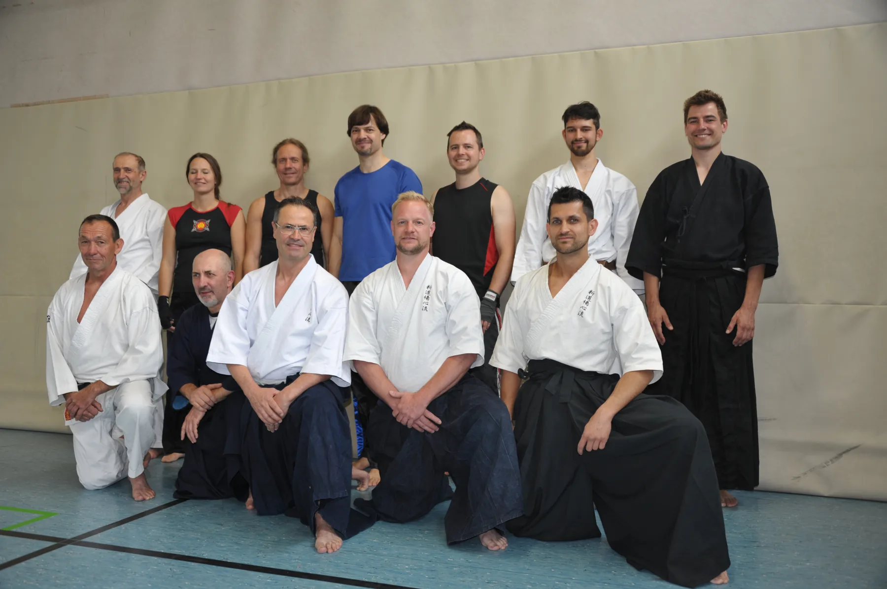
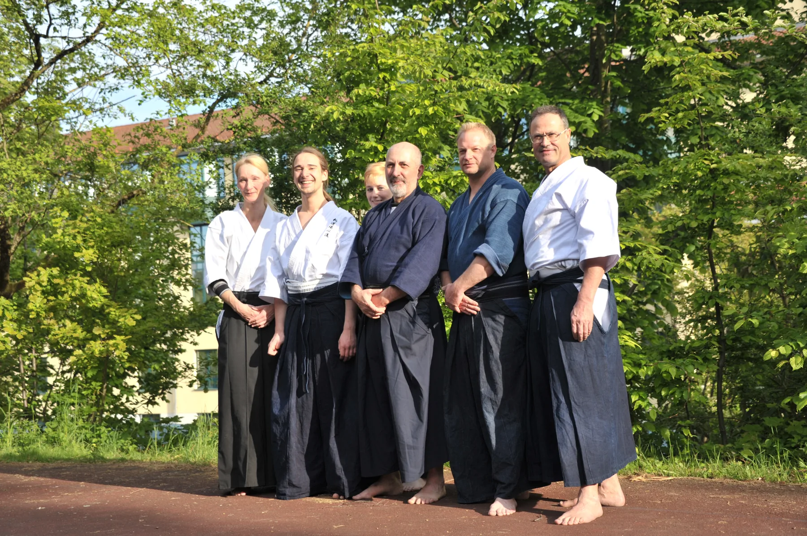
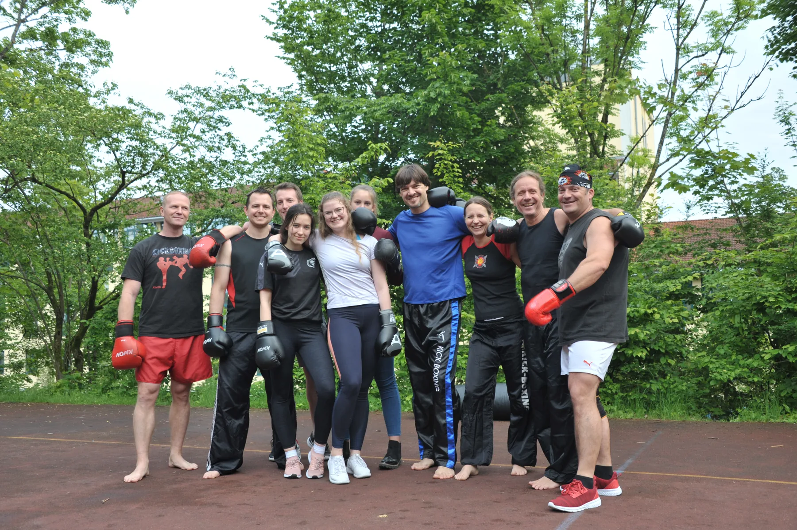
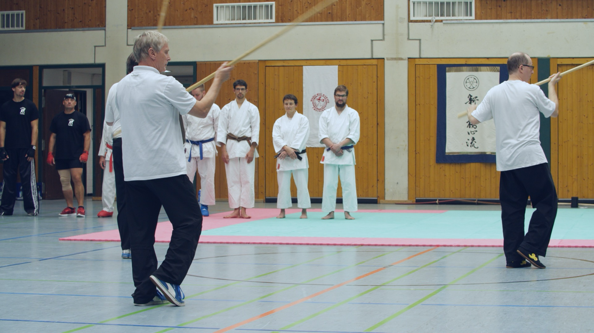

Vereinskultur

Schwarzer Gürtel und gute Gemeinschaft
Wer Karate betreibt, muss trainieren. Wer trainiert, braucht aber auch Regeneration und Gemeinschaft. Zum Vereinsleben gehören gemeinsame Abende nach dem Training, Lehrgänge, Sommerfest, Weihnachtsfeier und die Erinnerungen an besondere Ereignisse wie die 50-Jahr-Feier.
Geist des Dojo
Die Kampfkunst ist das Medium der Zusammenkunft. Der Geist dahinter ist das gemeinsame Üben, die Würdigung des Gegenübers und das gemeinschaftliche Sein. Egal was war: Der Verein hat gehalten und sich weiterentwickelt.

Einblicke ins Vereinsleben




Kampfsportgala in Bewegung
Das neue Videomaterial liegt vor. Für die veröffentlichte Website sollte daraus noch eine komprimierte Webversion erzeugt werden; im Prototyp ist der Abschnitt schon mit einem Posterbild vorbereitet.
